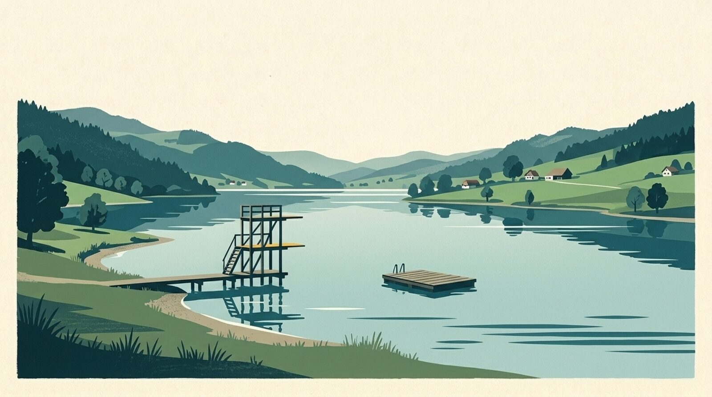
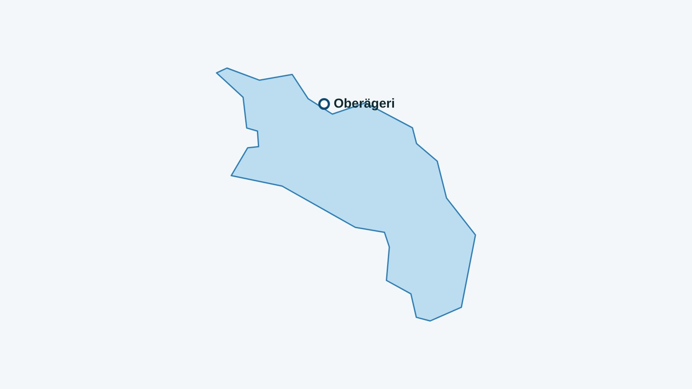

En bref
Mon Lac suit une plage du lac d’Ägeri : Oberägeri, avec la température de l’eau à 70 cm sous la surface quand elle est calculée. Voici la liste, puis les adresses utiles autour de l’eau.

Le lac d’Ägeri couvre environ 7,3 km², descend jusqu’à 83 m et se trouve à 724 m d’altitude.
La plage suivie du lac d’Ägeri
Entre parenthèses : la température du matin du 13 novembre 2026, à 70 cm sous la surface (modèle Alplakes).
- Oberägeri (10,9 °C)
Entrée, saison et accès
Prix et dates relevés le 13 novembre 2026 sur les sources ci-dessous, pour la saison 2026 : à confirmer sur le site de chaque bain avant d’y aller.
- Ägeribad (Oberägeri) : l’accès au lac est gratuit d’après badi-info.ch ; saison de la plage du 10 mai au 20 septembre 2026 (site du bain).
- Lido Unterägeri : saison 2026 du 9 mai au 20 septembre ; adulte 5 francs, 3,50 francs pour jeunes et étudiants, 2,50 francs de 6 à 16 ans ; ferme à 18 h le 1er août ; radeau et plongeoirs de 1, 3 et 5 m ; bus jusqu’à l’arrêt Unterägeri Seefeld, parking gratuit.
Un verre ou un repas au bord du lac d’Ägeri
- Restaurant Lago (Ägeribad), Oberägeri : Au Ägeribad (Strandweg 1) : terrasse ensoleillée avec vue sur le lac, cuisine méditerranéenne et desserts maison.
- Restaurant Seefeld (SeminarHotel), Unterägeri : Seestrasse 10 : grande terrasse au bord du lac ; en été, jeu de lumières et d’eau le soir.
- Restaurant Hüribach, Unterägeri : Au camping d’Unterägeri (Wilbrunnenstrasse 81) : terrasse directement sur le lac, cuisine de saison, ouvert toute l’année.
L’eau du Léman en ce moment
La température de chaque plage est dans l’app Mon Lac, mise à jour toutes les trois heures.